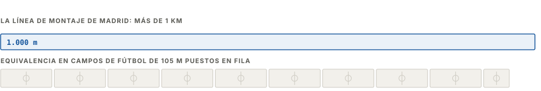
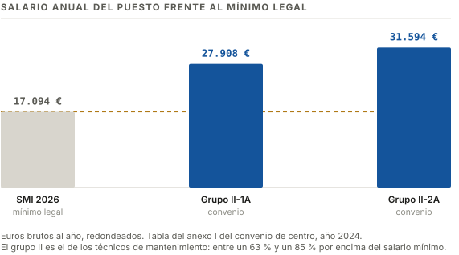
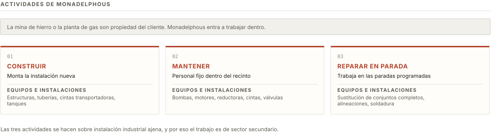
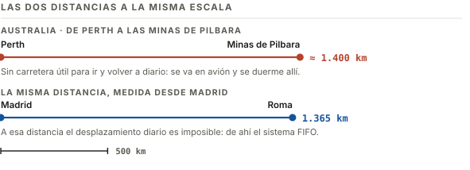
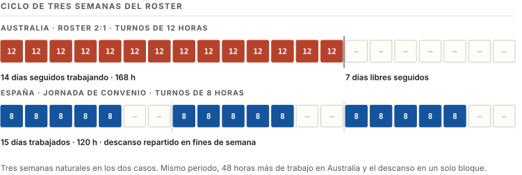
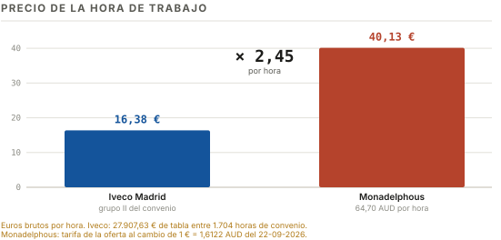

Empresa A · Iveco España, S.L.
Identidad y actividad
La única fábrica de camión pesado que queda en España.
Ficha
- Razón social
- Iveco España, S.L.
- Centro
- Madrid · Avenida de Aragón, 402
- Contacto
- +34 91 325 10 00 · iveco.com
- Forma jurídica
- Sociedad de Responsabilidad Limitada los socios responden solo del capital aportado; no cotiza en bolsa
- Sector
- Secundario · material de transporte · CNAE 29.10
Modelos fabricados
Camiones pesados de la marca propia Iveco: S-Way, X-Way y T-Way no son marcas distintas, son nombres de modelo de la casa, igual que el FH de Volvo o el Actros de Mercedes-Benz. Se venden en Europa, África, Oriente Próximo y Asia.
- S-Way · carretera. El más vendido en España en 2025.
- X-Way · obra y distribución.
- T-Way · todoterreno y minería.

Empresa A · Iveco España, S.L.
Tamaño, clientes y competencia
Clientes
Flotas europeas de logística: Reinert, ID Logistics, Spaansen, Vergossen.
Competidores
Volvo, Mercedes-Benz, Renault Trucks, Scania, DAF y MAN.
Iveco, primera en matriculaciones en España en 2024 con el 20,1 %. En más de 16 t, en 2025 manda Volvo con el 18,1 %.
Entidades del entorno
- ANFAC · patronal de fabricantes.
- AECIM · patronal del metal de Madrid.
Empresa A · Iveco España, S.L.
Puesto, salario y condiciones
Técnico de mantenimiento electromecánico, grupo II del convenio.
| Salario anual | 27.907,63 € — 31.594,29 € |
| Precio de la hora | 16,38 € |
| Jornada | 1.704 h al año en 213 días |
| Turnos | 06-14 · 14-22 · 22-06, con plus nocturno |
| Vacaciones | 22 días laborables, 6 trasladables |
| Plus de presencia | 91,12 € al mes |

Ventajas
- El salario está fijado en el boletín oficial.
- Tata Motors lo compró por 3.800 M € con compromiso de no cerrar Madrid.
Acceso
El grupo publica sus vacantes en LinkedIn. La oferta activa más cercana al título es Técnico/a de mantenimiento electrónico para la planta de Valladolid: pide FP II o Grado Superior en Mecatrónica Industrial, Automatización y Robótica o Regulación y Control, inglés técnico escrito, disponibilidad a tres turnos y un mínimo de tres años de experiencia en producción o mantenimiento.
Empresa B · Monadelphous Group Limited
Identidad y actividad
Mantenimiento industrial en las minas de hierro de Australia Occidental.
Ficha
- Razón social
- Monadelphous Group Limited
- Sede
- Victoria Park WA 6100 · Perth
- Contacto
- +61 8 9316 1255 · monadelphous.com.au
- Forma jurídica
- Public company limited by shares los accionistas responden solo de sus acciones; cotiza como MND
- Sector
- Secundario · reparación de maquinaria · CNAE 33.12 por equivalencia con la clasificación española
- Fundada
- 1972
Actividad
Construye, mantiene y repara instalaciones industriales dentro del recinto del cliente.
Zona de trabajo
Pilbara, Australia Occidental: minas de hierro, puertos de mineral y plantas de gas, a 1.400 km de Perth.

Empresa B · Monadelphous Group Limited
Tamaño, clientes y localización

Clientes
Mineras del hierro: Rio Tinto, 300 M AUD a cinco años (186 M €), y BHP y Rio Tinto, 140 M AUD (86,8 M €).
Competidores
UGL, Ventia, SRG Global y Downer EDI.
Entidades del entorno
- AWU · sindicato de la plantilla.
Empresa B · Monadelphous Group Limited
Puesto, salario y condiciones
Construction Mechanical Fitter: el oficio equivalente, con visado Work and Holiday.
| Tarifa | 64,70 AUD/h · 40,13 €/h |
| Turno | 12 horas |
| Ciclo | FIFO 2:1 · 14 días de trabajo y 7 libres |
| Régimen | Casual: recargo en vez de vacaciones |
| Viaje y cama | A cargo de la empresa, vuelo incluido |
| Bruto a 6 meses | 94.203 AUD · 58.431 € |
| Neto a 6 meses | 72.692 AUD · 45.089 € |
Visado 462 y vía de acceso
- Visado Work and Holiday: 18 a 30 años y 5.000 AUD 3.101 € acreditados. Tasa 840 AUD 521 € más 49 AUD 30 € de la White Card de obra.
- El título no se homologa: equivale al Certificate III. El puesto pide la misma mecánica, hidráulica y soldadura que el ciclo.
- Tope de 6 meses con el mismo empleador.

Requisitos que pide la oferta
- Trade Certificate del oficio: Certificate III in Engineering · Mechanical Trade.
- Experiencia: 2 años en mantenimiento.
- Construction Card de obra en vigor: la misma White Card de la izquierda.
- Derecho a trabajar en Australia acreditado.
- Disponibilidad para ciclo FIFO y turnos de 12 horas.
Comparación
Comparación de condiciones
Un año en Iveco frente a los seis meses que permite el visado.
1 € = 1,6122 AUD · Banco Central Europeo, 22-09-2026
| Concepto | Iveco España · Madrid | Monadelphous · Pilbara | Diferencia |
|---|---|---|---|
| Precio de la hora | 16,38 € | 40,13 € | × 2,45 |
| Horas del periodo | 1.704 h en 12 meses | 1.456 h en 6 meses | − 15 % |
| Ingreso bruto | 27.907,63 € | 58.431 € | × 2,1 |
| Continuidad | Antigüedad, cotización y 22 días de vacaciones | Tope de 6 meses, sin cotización ni vacaciones pagadas | — |
| Coste de entrada | 0 € | 1.742 € visado, tarjeta y vuelo | +1.742 € |

Límites de la comparación
- El ingreso de Iveco es bruto, sin IRPF descontado.
- Faltan los pluses de turno y presencia de Iveco.
| Vuelo ida y vuelta | 1.920 AUD |
| Visado 462 | 840 AUD |
| White Card | 49 AUD |
| Total | 2.809 AUD · 1.742 € |
| Equivale a | 43 horas de trabajo allí |
Comparación
Fuentes y fechas de consulta
Consultado el 23-09-2026; el cambio, del día 22.
Origen de cada dato
- Salario y jornada de Iveco: BOCM 205 de 28-08-2024.
- Códigos CNAE 29.10 y 33.12: Real Decreto 10/2025, BOE de 15-01-2025.
- Visado 462 y condición 8547: Department of Home Affairs.
- Planta, línea, cuotas, producción, huelgas y compra por Tata: sala de prensa de Iveco, ANFAC y prensa económica.
- Monadelphous: resultados a la bolsa australiana y notas propias. Tarifa y vuelo: portales de empleo y de vuelos.
- Precio de la hora, estimaciones a seis meses en bruto y en neto, coste de entrada y gráficos: elaboración propia.
Cálculo del neto australiano
- Tipos del visado working holiday, 15 % hasta 45.000 AUD y 30 % después: Income Tax Rates Act 1986, texto consolidado de 01-07-2026.
- Exención de los primeros 60.100 € del trabajo en el extranjero: artículo 7.p) de la Ley del IRPF.
- Cláusula de intercambio de información que activa esa exención: artículo 25 del convenio España-Australia, BOE de 29-12-1992.